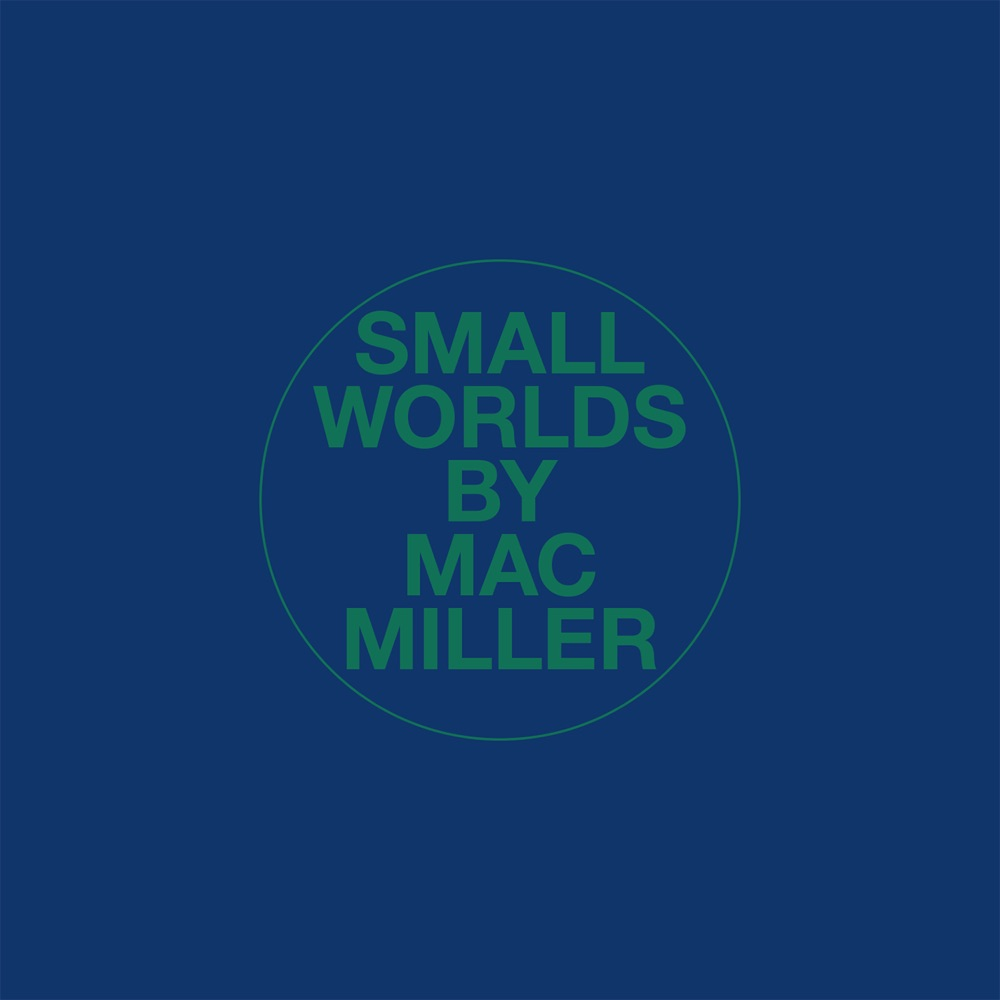

ON THE TURNTABLERECORD 01 / 06CURATED WITH FEELING

33⅓ RPM — STEREOMac Miller
Swimming
Hip-Hop / RapBETWEEN THE GROOVES
Explore the original album ↗ Original instrumental demo audio
Album tracks shown for discovery.
TRACKLISTSIDE A + B
0:000:30